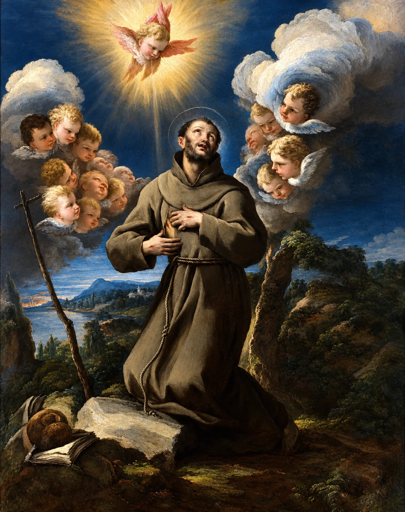

Hermano Sol
Símbolo de luz y día. Paradójicamente, Francisco le canta al sol en un momento de su vida en el que la luz del día le provocaba un intenso dolor físico.
Luz · ResplandorSAN FRANCISCO DE ASÍS · 1224–1226
Escrito en una choza de paja junto al convento de San Damián, San Francisco no le cantó a la naturaleza desde la comodidad, sino desde el dolor absoluto. Descubre el origen del primer gran poema de la literatura italiana.

CONTEXTO Y MANUSCRITO
El Cántico de las Criaturas (o Cántico del Hermano Sol) fue compuesto entre 1224 y 1226, durante los últimos meses de vida de Francisco. Casi ciego por una grave enfermedad ocular y atormentado por el dolor, el santo pasó 50 días en una pequeña choza de esteras de caña.
Fue justamente esa oscuridad física donde concibió una de las obras relevantes de la lírica europea, un poema dictado en dialecto umbro para que pudiera ser cantado y entendido por el pueblo sencillo, alejándose del latín formal de la época.
El texto es una oración que abraza la existencia al completo desde la luz deslumbrante del sol hasta el perdón en medio de los conflictos, culminando en la célebre estrofa sobre la "Hermana Muerte corporal".
SIMBOLISMO DE LOS ELEMENTOS
Símbolo de luz y día. Paradójicamente, Francisco le canta al sol en un momento de su vida en el que la luz del día le provocaba un intenso dolor físico.
Luz · ResplandorLa noche deja de ser tenebrosa. El firmamento es descrito con tres adjetivos precisos: clarificadas, preciosas y bellas.
Serenidad · NocheRepresenta la atmósfera, las nubes y la intemperie. Acepta el clima cambiante como parte del sustento divino.
Aire · AtmósferaDefinida como muy útil, humilde, preciosa y casta. Un recurso esencial tratado con la máxima reverencia y respeto.
Pureza · VidaCompañero del calor y la noche. Se destaca su fuerza, hermosura y la alegría que aporta a la comunidad campesina.
Calor · VigorNuestra hermana y madre que sostiene, gobierna y diversifica los frutos, las flores de colores y la hierba.
Sustento · FrutoTEXTO TRADUCIDO
Traducción al español del texto lírico original compuesto en dialecto umbro.
Altísimo, omnipotente, buen Señor, tuyas son las alabanzas, la gloria, el honor y toda bendición.
A ti solo, Altísimo, corresponden, y ningún hombre es digno de pronunciar tu nombre.
Alabado seas, mi Señor, con todas tus criaturas, especialmente el señor hermano Sol, el cual es día y por el cual nos alumbras.
Y él es bello y radiante con gran esplendor: de ti, Altísimo, lleva significación.
Alabado seas, mi Señor, por la hermana Luna y las Estrellas; en el cielo las formaste claras, preciosas y bellas.
Alabado seas, mi Señor, por el hermano Viento, y por el Aire, y la Nube y el Cielo sereno, y todo tiempo, por el cual das sustento a tus criaturas.
Alabado seas, mi Señor, por la hermana Agua, la cual es muy útil y humilde, preciosa y casta.
Alabado seas, mi Señor, por el hermano Fuego, por el cual alumbras la noche; y él es bello y alegre, robusto y fuerte.
Alabado seas, mi Señor, por nuestra hermana Madre Tierra, la cual nos sustenta y gobierna, y produce diversos frutos con coloridas flores y hierbas.
Alabado seas, mi Señor, por aquellos que perdonan por tu amor y soportan enfermedad y tribulación.
Bienaventurados aquellos que las soporten en paz, porque por ti, Altísimo, serán coronados.
Alabado seas, mi Señor, por nuestra hermana Muerte corporal, de la cual ningún hombre viviente puede escapar.
¡Ay de aquellos que mueran en pecado mortal! Bienaventurados aquellos a quienes encuentre en tu santísima voluntad, porque la muerte segunda no les hará mal.
Alabad y bendecid a mi Señor, dadle gracias y servidle con gran humildad.
IMPACTO CONTEMPORÁNEO
Ocho siglos después de su redacción, la intuición de San Francisco se ha transformado en un baluarte del pensamiento ambientalista contemporáneo.
En la encíclica Laudato si' (2015), el Papa Francisco toma las palabras iniciales del poema para articular una crítica a la degradación ambiental y la cultura del descarte, promoviendo el concepto de "ecología integral".
ACERCA DE ESTA EDICIÓN DIGITAL
Texto revisado a partir de la versión en dialecto umbro conservada en el Codex 338 de la Biblioteca Comunal de Asís. Edición académica orientada a la divulgación cultural.